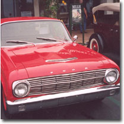
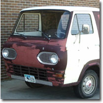
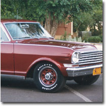
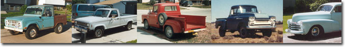

|
A Short History of KoolknobsKoolknobs have been around for about 25 years or more! I used to make them for the various cars I owned, and for friends. Everyone said, "Hey, those sure are cool knobs, you should sell 'em!" A name was born. Then a swap for labor with a computer nerd for some machining, and a website was born. Koolknobs are a great way to personalize your car; from high school kids to retired sports car enthusiasts, people just can't resist having something that sets their car apart from everyone else's. Pins, logos, key chains, jewelry, snake rattles, skulls, smiley faces, bullet shells, even a cigarette butt! You name it, somebody has thought of an idea for a shifter knob. Made of cast acrylic resin with a hardener mixed in, they're comfortable, fit your hand well, and aren't as sensitive to temperature extremes as most factory shift knobs. Koolknobs products are cast in CNC machined molds made of aluminum. The molds run from a simple sphere to the flared top shape, as well as a flat oval for floor shifters. Those with column shifts can choose from a tall narrow oval, a teardrop, and the latest mold, which is a round knob with the object cast in facing the driver. One of the things about Koolknobs products that sets them apart from the cheaper knobs on the market is their fit. I make every effort to get the customer a knob that fits their vehicle exactly, without set screws or universal type adapters. Most customers, like me, hate having something that rattles loose, vibrates, and falls off all the time. It's not just about shifter knobs, though. The product was born of a true love for cars, old ones for the most part. On this page are a few of the many cars I've built and owned over the years. You can tell my taste is eclectic, but the old stuff is my favorite! Enjoy the photos, and I hope you'll enjoy Koolknobs products on your vehicle, too. Sincerely, Bruce Roosa 
Contact Bruce Roosa at koolknobs@collinscom.net
|